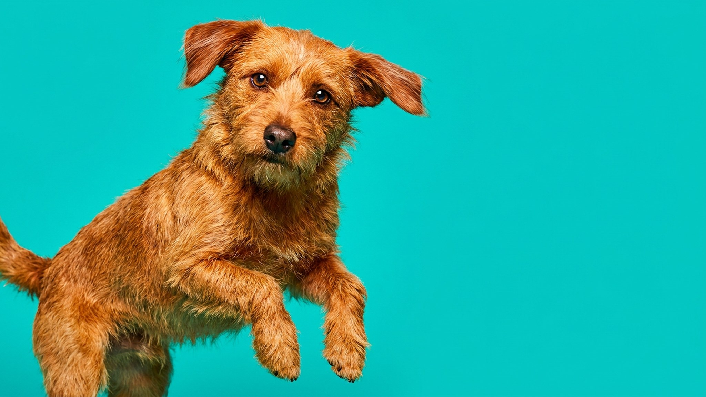

Бросили собаке красный мяч на зелёную траву — она ищет его носом, хотя предмет лежит в метре. Это не глупость и не плохое зрение. Собака просто не видит красный цвет на зелёном фоне. Миф о «чёрно-белом» зрении собак давно опровергнут — они различают цвета, но не те, что мы. Ниже — как именно видит собака и как это знание меняет игру, тренировку и выбор игрушек.
🐾 Не уверены, что это опасно?
Опишите симптом в AnimaLife — AI-ветеринар за минуту подскажет, что в пределах нормы, а когда пора к врачу.
Долгое время считалось, что собаки видят мир в оттенках серого. Это неверно. У собак два типа колбочек в сетчатке — рецепторов цветового зрения. У человека их три. Из-за этого цветовой охват собаки уже, но далеко не монохромный.
Собака видит мир примерно как человек с красно-зелёной дальтонией: жёлтый и синий различает хорошо, а вот красный, оранжевый и зелёный сливаются в один нейтральный оттенок. Именно поэтому красный мяч на зелёной траве для собаки практически невидим — оба предмета одного «цвета».
Исследования 2013 года (Неринг, Зорина, Мешкова) и последующие работы подтвердили: собаки стабильно выбирают объекты жёлтого и синего цветов в тестах с цветовой дифференциацией. Это не случайность — такой спектр восприятия был достаточен для охоты: зелень леса, синева неба, жёлтая шерсть добычи хорошо контрастируют между собой.
По двум параметрам зрение собаки заметно превосходит человеческое:
Эти знания напрямую влияют на качество игр и дрессировки:
🐾 Питомец ведёт себя странно?
AnimaLife расшифрует поведение кошки и собаки и подскажет, что делать. Попробуйте бесплатно прямо в мессенджере.
🐾 Понравился разбор?
Подпишитесь на канал — каждый день разбираем по одному тревожному симптому у кошек и собак: что в пределах нормы, а когда пора к врачу. Подпишитесь, чтобы не пропустить разбор, который может спасти здоровье вашего питомца.
Материал носит информационный характер и не заменяет очную консультацию ветеринара.